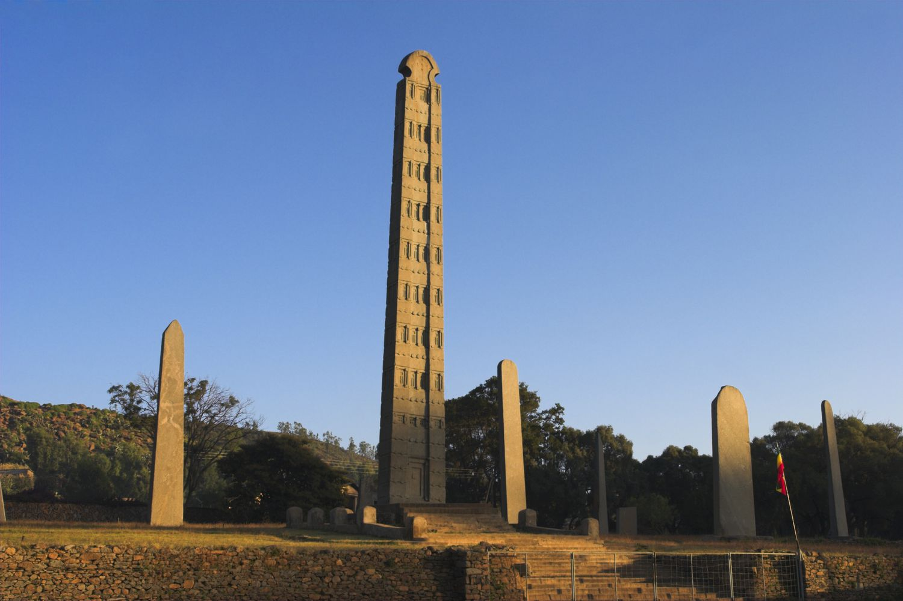
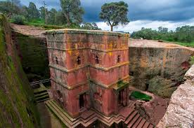

Historical Background
Ethiopia is one of the oldest countries in the world, with a rich history that dates back thousands of years. It is known for its ancient culture, monuments, and traditions that have stood the test of time.


Ancient Civilizations
The Kingdom of Aksum, one of the greatest civilizations of the ancient world, was located in present-day Ethiopia. It was a major trading empire and played a significant role in the spread of Christianity in the region.
Medieval Period
During the medieval period, Ethiopia saw the rise of powerful dynasties and kingdoms. The Zagwe dynasty, known for building the rock-hewn churches of Lalibela, is one of the most remarkable periods in Ethiopian history.
Modern History
In the modern era, Ethiopia maintained its independence during the colonial period, successfully resisting Italian invasion in the late 19th and early 20th centuries. It later became a founding member of the United Nations and the African Union.